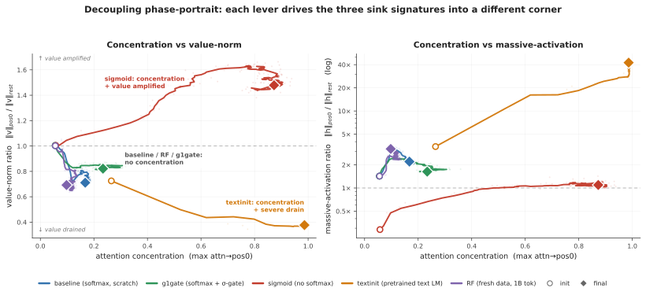
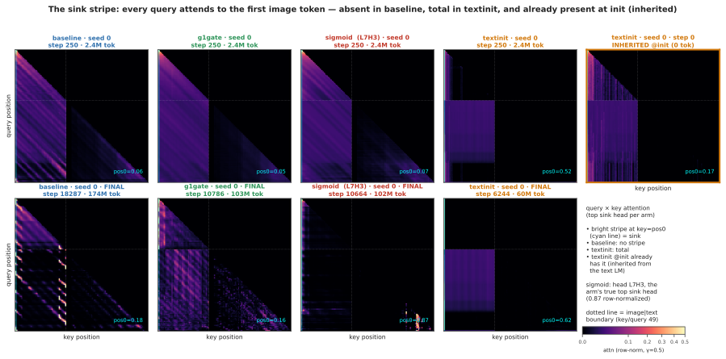
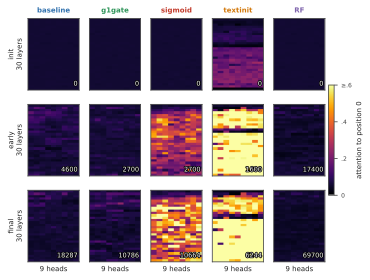
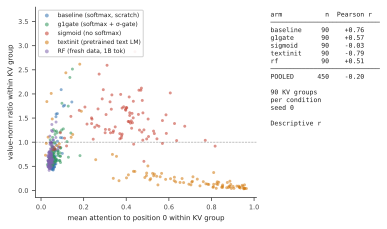
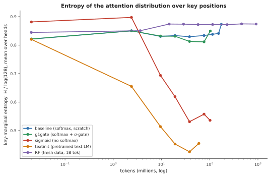
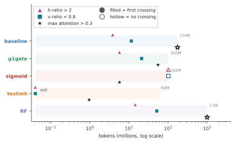
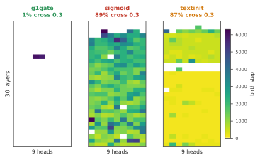

Submitted to VLM4RWD @ NeurIPS 2026
Attention sinks, token positions that draw heavy attention while contributing little, are a widely studied target of interventions in language models and are often linked, though not causally, to hallucinations in vision-language models. A sink is defined by attention concentration (Sinkε1), but in text LMs it reliably arrives with two companions: a drained value norm (v-ratio) and massive activations (h-ratio) at the same position. We measure these three signatures during multimodal pretraining: a 222M vision-language model with a randomly initialized decoder, position 0 being an image token, no BOS, trained under four levers: softmax attention, output-gated softmax, unnormalized sigmoid attention, and initialization from a pretrained text LM. We find that the signatures come apart, across 2-3 seeds, depending on which train-time lever was applied. Most notably: on a 1B fresh-token run (2.39 effective visual epochs), the massive activations more than double while attention concentration stays at exactly zero at every threshold we test. Value-norm drain emerges as a third independent axis, apart from the massive-activation vs. sink dissociations known from text-only models.
Decoder-only transformers pick up a habit early in training: a large share of attention goes to the first token or tokens of a sequence, whatever they contain. The habit carries practical weight — streaming inference depends on it [1], the extreme activation outliers that ride along with it make quantization harder [2], and a survey now organizes a subfield around interpreting and removing it [3].
The sink does not arrive alone. In text language models three measurements move together: attention concentrates on the sink token, the value vector there drops to a near-zero norm, called value- state drain [4], and the residual stream there grows an abnormally large norm, called a massive activation [2, 5]. These effects settle on the same few tokens [6] and appear near step 1000 [7], and the field has taken the co-occurrence as licence to treat all three as facets of one attention- sink phenomenon.
Whether they really are one phenomenon is contested. One line argues for causal unity: massive activations mathematically require representational compression, and ablating them removes both compression valleys and sink formation [7]. A related view holds that outlier-driven rescaling by attention and residual sinks is essential to stable training [8]. Two recent studies pull the other way, each separating a pair of the signatures by intervention — normalization scheme [9], value scale [10]. Both are text-only, and each separates at most two of the three.
Which signature a study measures therefore decides what it can conclude. If the three move independently, a lever that clears concentration while leaving the value path alone reads as a fix under one metric and a failure under the next, and two papers can disagree while both are right. The stakes reach past bookkeeping: sink-like attention has been tied to hallucination and weak visual grounding in deployed vision–language models [13–16]. We measure all three at once, throughout training, and test no downstream behavior.
Vision–language models make a sharp instrument for the question, because the multimodal setting changes what position 0 is: our sequence starts with 49 image tokens and has no BOS token, so the candidate sink token is a visual token, without the special-token machinery that text-LM sink accounts lean on. The multimodal sink studies we know analyze mostly frozen, already-trained backbones at inference time [11, 12], and the one training-time view follows a single magnitude rather than three signatures (§4). Whether the signatures arrive together, in sequence, or independently takes a randomly initialized decoder with all three logged separately from step 0.
We work at deliberately small scale: a 222M-parameter nanoVLM [17], where a pretrained SigLIP-B/16 encoder [18] feeds a randomly initialized decoder with the SmolLM2-135M architecture [19]. Four levers each target one sink-relevant mechanism (§2): standard softmax attention (baseline), a Qiu-style G1 output gate in our zero-initialized variant [20] (g1gate), unnormalized sigmoid attention, which removes the normalization sinks are argued to come from [6] (sigmoid), and initialization from the pretrained SmolLM2 text model (textinit). A validated probe logs all three signatures every 100 steps. The four-arm comparison reuses a small image pool, so we re-test the central negative result under low repetition, on a fresh stream of one billion tokens (RF, 2.39 effective visual epochs).
Contributions.
Decoupling itself is not new [9, 10] and we do not claim it. The new part is the conjunction — all three signatures tracked jointly under randomly initialized decoders in a multimodal model, with value-norm drain as a third axis.
Model and token layout. All runs use a 222M-parameter nanoVLM [17]: a pretrained, trainable SigLIP-B/16 vision encoder [18] feeding a decoder with the SmolLM2-135M architecture [19] through a learned modality projector. The decoder has 30 layers of grouped-query attention, 9 query heads per layer sharing 3 KV heads: 270 (layer, query-head) pairs but only 90 (layer, KV-group) value projections, a distinction that matters in §3.3. It trains from random initialization in every arm except textinit, the designed exception, importing first-position structure from text pretraining (§3.1). Each sequence holds 49 image tokens as a causal prefix, then 79 left-padded text tokens, 128 in all. Position 0 is the first image token, and there is no BOS token (§1).
Arms. Four training levers, each targeting one sink-relevant mechanism. Everything else stays byte-identical across arms.
| arm | attention | LM init | ViT init | lever precedent |
|---|---|---|---|---|
| baseline | softmax | random | pretrained | — |
| g1gate | softmax + elementwise σ-gate (zero-init, post-SDPA) | random | pretrained | G1 gating [20] |
| sigmoid | unnormalized sigmoid, no softmax | random | pretrained | Gu et al. [6] |
| textinit | softmax | pretrained SmolLM2-135M | pretrained | — (novel control) |
The g1gate and sigmoid levers have established sink effects in text-only models [20, 6]. textinit has no precedent there: an inheritance control, carrying in whatever sink structure text pretraining built into SmolLM2.
A scale confound in our gate variant. Unlike Qiu et al. [20], we initialize the G1 gate at exactly zero, so it opens at σ(0) = 0.5 and the arm begins as a half-scale output intervention as well as a gating one — Qiu-style G1 in our zero-initialized variant throughout (§5).
Data and the two training regimes. The four-arm comparison trains on four curated subsets of the_cauldron [21], about 146K images, matched at about 100M tokens per arm. textinit stops at 60M, where its signatures have plateaued (§3.1). Reuse of that pool gives high visual-epoch counts, the objection the RF arm (random-fresh) answers (§3.2): the baseline recipe re-trained on a fresh FineVision stream [22] to 1B tokens, over about 4.6M natural images, at 2.39 effective visual epochs — a low-repetition run, not a repetition-free one, since examples repeat about 2.4 times on average. We estimate the overlap between the fresh pool and the repeated subsets at under 3%, from config-level composition rather than image-level deduplication. Swapping datasets trades the repetition confound for a domain-shift confound, which §5 takes up.
Three signatures, tracked separately. We log the three sink symptoms the text-LM literature reports together, each at its own granularity, following Gu et al. [6] at fixed sequence length. The decoder has L = 30 layers, H = 9 query heads and G = 3 KV heads per layer. Every quantity below is averaged over valid query positions and over the fixed probe batch.
Concentration (Sinkε1) is the fraction of the L·H = 270 (layer, query-head) pairs whose mean attention to position 0 exceeds ε. We use the ε = 0.3 default of [6] and check ε ∈ {0.2, 0.4}. Cross-arm tables report the stricter ε = 0.2, which makes an absence claim harder to pass.
Value-norm ratio (v-ratio) is the value norm at position 0 divided by the mean value norm over the other valid positions, per layer and averaged over the 30 layers. Below 1 is value-drain [4], above 1 amplification. Under grouped-query attention a value vector belongs to a KV group and repeats across 3 query heads, so the ratio rests on L·G = 90 distinct value projections, not 270 (§3.3).
Residual-norm ratio (h-ratio) is the residual-stream norm at position 0 divided by the mean norm over the other positions, again per layer and averaged over the 30 layers. We call it a massive-activation proxy, because massive activations are normally defined by channel-level outliers [2, 5], which we never measured (§5).
All three metrics anchor on position 0 by construction, a measurement choice we check: at seed 0, per-position attention mass makes position 0 the maximum-mass token in every arm (Appendix C), and §5 handles the remaining seed-level caveat. The sigmoid arm reports the row-normalized attention view, which keeps concentration comparable across arms, and we also log the raw sigmoid mass (Appendix D).
Why a sink is expected at all. Softmax forces every attention row to sum to one, so a head with nothing worth retrieving must still put its mass somewhere [6]. Our sigmoid arm removes that constraint and tests it directly.
Probe. The function probe_sinks() re-walks the decoder from the live module weights in eager mode, fp32, no gradients, independent of the training path (fused SDPA kernels, autocast, torch.compile). Every call validates its hidden states against the real forward pass to a relative error below 10−2, so the probe cannot drift from what the trained model computes. The probe batch is fixed across all runs and seeds, keeping every number comparable, and probes fire every 100 optimizer steps, dense enough to timestamp each signature’s first threshold crossing. Appendix F gives the probe batch, token accounting and validation protocol.
Recipe. AdamW with weight decay 0.1, following [6], gradient clip 1.0, cosine schedule with 3% warmup. Arms in a comparison differ only in the lever under test. Two seeds for baseline and sigmoid, three for g1gate and textinit, one for RF. Appendix F gives the learning rates, precision and batch size.
Validation losses, and what they license. Training stays healthy in all reported runs. At the matched 100M-token checkpoint the held-out losses are 1.182 for baseline, 1.133 for g1gate, 1.206 for sigmoid and 0.877 for textinit, and RF reaches 0.638 at 1B tokens (Appendix F). Two cautions. textinit starts from a pretrained text decoder, so its lower loss reflects unequal competence, not a lever effect: only baseline, g1gate and sigmoid are equal-token, equal- initialization comparisons. And the repeated-data arms show a large train–validation asymmetry (val_seen near 0.44 against val_unseen near 1.18), the overfitting signal that motivates RF. RF has no seen split, so the weaker statement its data supports is a held-out loss with a negative fitted slope over the second half, ending at 0.638, with individual evaluations fluctuating (§5). We did not run MMStar or any other downstream benchmark on any arm, so this paper makes no capability claim (§5).

Table 1 collapses the seeds into per-arm ranges, each arm at its final matched checkpoint: about 100M tokens, 60M for textinit, whose signatures have plateaued by then (per-seed table in Appendix B). No two arms share a signature triple.
Table 1 — the four corners (n = 2–3 seeds per arm). Concentration is Sink0.21, the fraction of the 270 (layer, query-head) pairs whose mean attention→pos0 exceeds 0.2. The v-ratio rests on 90 (layer, KV-head) value projections and the h-ratio on 30 layers (§2).
| arm | concentration | value-norm | massive-activation proxy |
|---|---|---|---|
| baseline | absent (0.000) | mild drain (0.69–0.72) | moderate (1.7–2.2) |
| g1gate | near-absent (0.004–0.011) | milder drain (0.81–0.85) | moderate (1.7–2.2) |
| sigmoid | strong (0.76–0.83) | amplified (1.48–1.60) | no strong asymmetry (1.1–1.3) |
| textinit | strong (0.56–0.85) | strong drain (0.38–0.63) | extreme (5.5–42.5) |
The value-norm axis alone takes three directions — drained hard, drained mildly, amplified — and the corners separate pairwise on single axes. g1gate differs from baseline on the value-norm axis alone: concentration absent or near-absent and the residual-norm ratio moderate in both, while the gate makes the baseline’s mild drain milder still, a 15–19% drain rather than none. sigmoid and textinit both reach strong concentration and then part on the direction of the value-norm move and on the residual-norm ratio. The arms are not a factorial design, so we report distinct intervention-associated profiles rather than isolated causal effects of single levers. The trajectories in Figure 1 separate early and do not share one origin: textinit starts from a pretrained text decoder that already carries a subthreshold first-position bias, with Sink0.31 still 0.000 at step 0.
Reproducibility differs by arm. g1gate is tightest, Sink0.21 of 0.004, 0.011 and 0.0037 across three seeds. The corner of textinit repeats across seeds and its magnitudes do not: seed 0 sits far above the other two on every signature at once, h-ratio 42.5 against 5.5–12.2, partly because at seeds 1 and 2 its peak signatures move off position 0, where our metrics anchor (Appendix B, H). We therefore report textinit’s massive-activation proxy as a range (5.5–42.5×) with a median near 12× throughout, and treat the corner as the reproducible claim rather than any magnitude.
The corners also separate in time (Appendix H, Fig. A4, seed 0). The random-decoder softmax arms, baseline, g1gate and RF, cross the norm thresholds without ever crossing concentration. sigmoid is the mirror image, crossing concentration without either norm threshold. textinit starts above both norm thresholds and crosses concentration later. Where a run crosses both kinds, the norm signatures come first, and under text initialization the three need not even settle on the same token (timings, positional scan and entropy-collapse correlate in Appendix H, Appendix E sets out, as untested hypotheses, how each lever might move a different axis).
Figure 2 shows the separation inside a single head. Its rightmost panel carries the most weight: the textinit stripe is already there at step 0, imported with the text-LM weights before the model has seen one image.

The four-arm comparison reuses a 146K-image pool, so a reader could read its “concentration never emerges” result as an overfitting artifact. The RF arm answers that: the identical baseline recipe on a fresh FineVision stream to one billion tokens at 2.39 effective visual epochs, a low-repetition run rather than a repetition-free one. Its held-out loss has a negative fitted slope over the second half of training and ends at 0.638, while individual evaluations fluctuate (§2, §5).
Concentration never arrives: Sink0.31 = 0.000 across the entire 0 → 1B run, no head of the 270 crossing the threshold at any of about 700 probes. The massive-activation proxy meanwhile keeps growing far past warmup.
Table 2 — RF (fresh stream, n = 1 seed), init → 1B tokens.
| signature | @ init | @ 1B | net |
|---|---|---|---|
| Sink0.31 (concentration) | 0.000 | 0.000 | flat zero, entire run |
| max attn→pos0 | 0.056 | 0.098 | ≈flat, far below threshold |
| h-ratio (massive-activation proxy) | 1.43 | 3.22 | ≈2.3×, positive long-horizon trend |
| v-ratio (value-norm) | 1.00 | 0.69 | net drain, non-monotone |
Warmup does not explain the rise: the h-ratio climbs from 2.40 at about 57M tokens to 3.22 at 1B, long after the 3% warmup window closes, though not monotonically at probe resolution, hence a positive long-horizon trend. In Figure 1, right, the violet trajectory climbs and never moves rightward. The v-ratio ends below its initialization value, but about 75% of that drop happens in the first 57M tokens and part then recovers, so we report it as supporting context rather than ongoing emergence.
A tight coupling between concentration and value-drain should at minimum hold the sign of their per-head correlation constant across regimes. It does not. Table 3 gives the Pearson r between attention→pos0 and value-norm ratio at each arm’s final checkpoint, seed 0, over the 90 (layer, KV- group) observations, averaging a group’s query-head attention rather than triplicating its value observation (§2, scatter in Fig. A2).
Table 3 — r(attn→pos0, v-ratio), final checkpoint, seed 0.
| baseline | g1gate | sigmoid | textinit | RF | pooled |
|---|---|---|---|---|---|
| +0.76 | +0.57 | −0.03 | −0.79 | +0.51 | −0.20 |
These correlations are descriptive, not inferential: heads within a layer are not independent and each arm rests on a single seed here, so a p-value would mislead and we report none. Collapsing to the 90 KV groups removes the pseudoreplication a per-query-head reading would introduce, leaving the picture unchanged (Appendix D).
The pattern is about sign, which pseudoreplication does not manufacture: heads attending more to position 0 have larger value norms in the baseline regime and smaller ones under text initialization, and the pooled correlation is weak only because arms of opposite sign cancel. We claim no consistent-sign relationship across arms — not the absence of a coupling law, though a fixed coupling would show one sign everywhere, and it does not.
Attention sinks and their companions in text language models. Gu et al. [6] give the canonical account: the sink token acts “more like key biases, storing extra attention scores,” carries small key and value norms as part of the same phenomenon, and connects to massive residual-stream activations [2, 5]. They also show unnormalized sigmoid attention prevents sink formation in text models up to 1B parameters, which our sigmoid arm builds on. Guo et al. [4] call the concentration and value-drain coupling “active-dormant” heads. Queipo-de-Llano, Arroyo et al. [7] make the strongest unity claim and the only genuinely causal one: massive activations mathematically require representational compression, and ablating a model’s layer-0 massive activation removes both compression valleys and sink formation. We reserve “causally unified” for that result alone. Peng et al. [24] trace a first-position sink circuit emerging early in from-scratch text pretraining, without separating the signatures.
Prior decoupling results: text-only, two axes. Two papers already separate pairs of these signatures, and we scope our claim around them. Sun, Canziani, LeCun and Zhu [9] show massive activations and attention sinks are dissociable architectural artifacts: a change of normalization scheme crushes the massive-activation spike while the sink ratio survives. Chen and Yao [10] decouple the same pair from the opposite direction and from scratch: a value-scale intervention in 0.1–0.3B text models keeps the sinks and suppresses massive activations. Neither treats value-norm drain as a third axis, and neither is multimodal. Fesser et al. [23] give the closest external support for tracking the value norm separately: one sink pattern can hide an “adaptive nop” (negligible value norms) or a “broadcast” that redistributes global information (low-rank outputs), though that work diagnoses trained vision transformers rather than tracking emergence. Qiu et al. [8] argue the opposite case, that outlier-driven rescaling by attention and residual sinks is essential to stable training. The field has settled neither question.
Multimodal sinks: mostly frozen backbones, inference time. Luo et al. [11] separate ViT-propagated from LLM-emerged sinks. Their Appendix A.4 tracks sink-dimension magnitudes across alignment checkpoints, so a training-time view has precedent, though on a frozen vision transformer with a pretrained language model, following one magnitude rather than three signatures. Choi et al. [12] likewise distinguish vision-sinks from language-sinks in a frozen model and gate them by layer. Both establish distinct vision-side and language-side origins, which our textinit inheritance result fits. What is missing is dense, joint tracking of the three quantities in a decoder that starts from random weights. Vision transformers also grow high-norm “register” tokens of their own [25], hence the pretrained- encoder limitation in §5. A separate line ties these signatures to hallucination and grounding failure in deployed models and intervenes at inference time [13–16], the practical reason it matters which signature a mitigation moves.
The gating lever. Qiu et al. [20] introduce the head-specific elementwise sigmoid gate on attention output that our g1gate arm adapts. In text models it “largely reduces the attention score allocated to the first token and decreases massive activations” while improving quality. Our zero-initialized variant confounds gating with initial output scaling (§2, §5). With that caveat, concentration is already absent in our baseline, so the gated arm differs on the value-norm axis: the drain becomes milder, 0.69–0.72 to 0.81–0.85, rather than disappearing — invisible unless the three signatures are logged separately.
Positioning. The closest prior work separates at most two of the three axes, in text-only models, and the multimodal studies work mostly on frozen ones. Our claim is the conjunction: concentration, value-norm drain and the residual-norm ratio tracked jointly and separately in multimodal pretraining with a randomly initialized decoder, adding value-norm drain as a third axis beyond the text-only dissociations [9, 10]. Decoupling itself is not ours, and prior multimodal work could study emergence if it chose to.
Metrics anchored on position 0. We measure all three signatures at the first image token, checked by per-position attention mass rather than argmax alone: position 0 is the maximum-mass token in every arm at seed 0, and stays so for baseline, g1gate and sigmoid at every seed we scanned. It does not in textinit, where at seeds 1 and 2 the peaks move to other positions (per- position table in Appendix C). The pos0-anchored textinit magnitudes at those seeds therefore understate its peaks, one more reason to treat that arm’s corner rather than its magnitudes as the claim. In RF the attention argmax sits at pos1, but with mass 0.053 against 0.044 at pos0, a diffuse profile rather than a displaced sink, so the RF result does not depend on the anchor.
The gate arm carries a scale confound. We initialize the G1 gate at exactly zero, so it opens at σ(0) = 0.5 and halves attention output at step 0, where Qiu et al. [20] use ordinary initialization (§2). Gating and initial output scaling are therefore confounded in g1gate: its differences from baseline cannot be attributed to gating alone, and a scale-matched control is future work.
Pretrained vision encoder: no arm is fully from scratch. The SigLIP encoder is pretrained and trainable in every arm, and textinit also uses a pretrained decoder. We study vision–language pretraining with randomly initialized decoders, not from-scratch training of the whole model. Vision transformers grow high-norm register tokens of their own [25], and sinks can propagate from a vision transformer into a vision–language model [11], so part of our residual-norm signal could be inherited rather than decoder-formed. Our defense is the trajectory: the h-ratio starts at 1.0–1.4 and rises to 3.22 across 1B tokens in RF, where inheritance from a static encoder predicts a high, flat h-ratio from step 0. A randomly initialized vision transformer, which would isolate the decoder, is future work.
The h-ratio is a proxy, not a measurement of massive activations. Massive activations are normally defined by channel-level outliers [2, 5]. We measured a position-specific residual-norm ratio and never computed channel-level statistics (§2). A large h-ratio is consistent with massive activations without establishing them.
Token scale. Our runs reach at most 1B tokens per arm, against the roughly 5B canonical in the text-LM sink literature [6]. Text-LM sinks form near step 1000 [7], far inside our range, but a signature absent at 1B could still emerge later.
Reproducibility of textinit magnitudes. The massive-activation proxy of textinit is seed-sensitive, an h-ratio of 5.5–42.5 across three seeds, with seed 0 the outlier on every signature. The corner — strong concentration, strong drain, large residual-norm ratio — is the reproducible claim. No specific magnitude is.
Provenance and seed count. The seed-0 raw probes for the four-arm comparison come from a checksummed archive summary rather than first-hand re-derivation. Seeds 1 and 2 we did re-derive independently, an audit that caught a metric-labeling error in an earlier internal consolidation (Appendix G). baseline and sigmoid have two seeds, g1gate and textinit three, RF a single seed. RF also contains one weights-only optimizer restart at about 57M tokens, forced by an out-of- memory error: weights reloaded, AdamW moment estimates discarded, so RF is not one uninterrupted optimizer trajectory. The audit verified continuity across that seam: v-ratio and h-ratio identical at the shared checkpoint, a double-covered 600-step overlap diverging only within probe noise, concentration 0.000 on both sides. Concentration was reproducibly zero across both repeated-data baseline seeds, adequate support for the negative claim, and a second fresh-data seed would strengthen it.
What the RF control does and does not establish. RF has no distinct seen split, so we cannot run for it the val_seen / val_unseen comparison that exposes memorization in the repeated arms. The weaker statement its data supports is the falling-slope statement of §2. Its streaming shuffle buffer dropped from 1500 to 500 examples partway through, again for memory, so stream ordering is not homogeneous, though the Sink0.31 = 0.000 result and the h-ratio rise hold within each regime separately. Its probe batch is still the fixed repeated-the_cauldron tail used by the other arms, which keeps RF’s signatures comparable to theirs — what the negative result needs — at the cost of measuring them on data from the other distribution. And RF buys lower repetition by changing dataset, so it trades the repetition confound for a domain-shift one, deliberately and with the fresh pool chosen to minimize shift. The under-3% overlap figure is config-level, not image-level (§2), and the third, domain-matched control we did not run is the known follow-up.
We report no benchmark accuracy. We measure sink signatures only (§2): no downstream benchmark evaluation, such as MMStar, on any arm, and no claim about how signature dissociation relates to downstream capability.
The coupling is lever-dependent. Across four training levers, the three signatures land in four distinct corners: value norms are strongly drained, mildly drained, or amplified, and on a billion fresh tokens massive activations more than double while concentration stays at zero. This extends two-way dissociations in text-only models [9, 10] to a third, separately measured axis in multimodal pretraining. In text LMs, massive activations can causally produce sinks [7]; our results show the coupling can also fail to form.
The practical implication is simple: no one signature is a proxy for the others. A model without a concentration sink can still develop a growing residual-norm asymmetry, and an intervention judged on one signature may leave the others unchanged.
Next steps. A randomly initialized vision encoder, to isolate what the decoder contributes to the residual-norm signal. A fresh-data run past 1B tokens. A scale-matched gate control, to separate gating from the half-scale confound of §2.
Reproducibility. A self-validating probe (§2) computes all signatures on a fixed probe batch, from logs taken every 100 steps, and the Appendix holds the per-seed tables. We will release the code, the probe, the run configurations, the per-run logs, and the training checkpoints on acceptance. We withhold the links for double-blind review.
[1] G. Xiao, Y. Tian, B. Chen, S. Han, M. Lewis. Efficient Streaming Language Models with Attention Sinks. ICLR 2024. arXiv:2309.17453.
[2] M. Sun, X. Chen, J. Z. Kolter, Z. Liu. Massive Activations in Large Language Models. COLM 2024. arXiv:2402.17762.
[3] Z. Su et al. Attention Sink in Transformers: A Survey on Utilization, Interpretation, and Mitigation. arXiv:2604.10098, 2026.
[4] T. Guo, D. Pai, Y. Bai, J. Jiao, M. I. Jordan, S. Mei. Active-Dormant Attention Heads: Mechanistically Demystifying Extreme-Token Phenomena in LLMs. CPAL 2025. arXiv:2410.13835.
[5] N. Cancedda. Spectral Filters, Dark Signals, and Attention Sinks. ACL 2024 (pp. 4792–4808). arXiv:2402.09221.
[6] X. Gu, T. Pang, C. Du, Q. Liu, F. Zhang, C. Du, Y. Wang, M. Lin. When Attention Sink Emerges in Language Models: An Empirical View. ICLR 2025. arXiv:2410.10781.
[7] N. Queipo-de-Llano, D. Arroyo, F. Barbero, Y. Dong, M. Bronstein, Y. LeCun, R. Shwartz-Ziv. Attention Sinks and Compression Valleys in LLMs are Two Sides of the Same Coin. arXiv:2510.06477, 2025.
[8] Z. Qiu et al. A Unified View of Attention and Residual Sinks: Outlier-Driven Rescaling is Essential for Transformer Training. arXiv:2601.22966, 2026.
[9] M. Sun, A. Canziani, Y. LeCun, C. Zhu. The Spike, the Sparse and the Sink: Anatomy of Massive Activations and Attention Sinks. arXiv:2603.05498, 2026.
[10] Y. Chen, Z. Yao. Attention Sinks Induce Gradient Sinks. arXiv:2603.17771, 2026.
[11] Y. Luo et al. To Sink or Not to Sink: Visual Information Pathways in LVLMs. arXiv:2510.08510, 2025.
[12] J. Choi, J. Kim, S. Kim, S. Hong, J.-H. Park. When Sinks Help or Hurt: Unified Framework for Attention Sink in Large Vision-Language Models. ECCV 2026. arXiv:2604.03316.
[13] S. Kang, J. Kim, J. Kim, S. J. Hwang. See What You Are Told: Visual Attention Sink in Large Multimodal Models. ICLR 2025. arXiv:2503.03321.
[14] T. Shukla, Z. Kira. SAGE: Sink-Aware Grounded Decoding for Multimodal Hallucination Mitigation. arXiv:2603.27898, 2026.
[15] X. Zhang, Y. Zhu, C. Gu, J. Cao, H. Cheng, K. Wu. What Drives Attention Sinks? A Study of Massive Activations and Rotational Positional Encoding in Large Vision–Language Models. Information Processing & Management, 63(2A), art. 104431, 2026. DOI 10.1016/j.ipm.2025.104431.
[16] J. Binkowski, K. Adamczewski, T. Kajdanowicz. Attention Sinks as Internal Signals for Hallucination Detection in Large Language Models. arXiv:2604.10697, 2026.
[17] L. Wiedmann, A. Roy Gosthipaty, A. Marafioti. nanoVLM. GitHub repository, 2025. https://github.com/huggingface/nanoVLM.
[18] X. Zhai, B. Mustafa, A. Kolesnikov, L. Beyer. Sigmoid Loss for Language Image Pre-Training (SigLIP). ICCV 2023. arXiv:2303.15343.
[19] L. Ben Allal et al. SmolLM2: When Smol Goes Big — Data-Centric Training of a Small Language Model. arXiv:2502.02737, 2025.
[20] Z. Qiu et al. Gated Attention for Large Language Models: Non-linearity, Sparsity, and Attention-Sink-Free. NeurIPS 2025. arXiv:2505.06708.
[21] H. Laurençon, L. Tronchon, M. Cord, V. Sanh. What Matters When Building Vision-Language Models? (Idefics2 / The Cauldron). NeurIPS 2024. arXiv:2405.02246.
[22] L. Wiedmann, O. Zohar, A. Mahla, X. Wang, R. Li, T. Frere, L. von Werra, A. Roy Gosthipaty, A. Marafioti. FineVision: Open Data Is All You Need. arXiv:2510.17269, 2025.
[23] L. Fesser, M. Jacobs, T. Fel, A. Keller, S. Kakade. A Unifying View of Attention Sinks: Two Algorithms, Two Solutions. arXiv:2606.08105, 2026.
[24] R. Peng, R. Li, M. Chen, Y. Zhou, Q. Guo, X. Qiu. How Attention Sinks Emerge in Large Language Models: An Interpretability Perspective. arXiv:2603.06591, 2026.
[25] T. Darcet, M. Oquab, J. Mairal, P. Bojanowski. Vision Transformers Need Registers. ICLR 2024. arXiv:2309.16588.



This table gives the per-seed values behind the collapsed ranges of Table 1, and adds the maximum attention→pos0 where we have it. We logged that metric for seeds 1 and 2 only, because the seed-0 archive summary does not include it. We trust the seed-0 values from a checksummed archive rather than re-derive them first-hand (§5). Each arm is read at its final matched checkpoint. All three signatures of textinit have plateaued at 60M tokens, and its h-ratio changes by less than 10% from 60M to 100M in the seeds that continued.
| arm | seed | tokens | Sink0.21 | mean attn→pos0 | max attn→pos0 | v-ratio | h-ratio |
|---|---|---|---|---|---|---|---|
| baseline | s0 | 101M | 0.000 | 0.068 | — | 0.723 | 2.16 |
| baseline | s1 | 100M | 0.000 | 0.062 | — | 0.687 | 1.71 |
| g1gate | s0 | 101M | 0.004 | 0.068 | — | 0.805 | 1.67 |
| g1gate | s1 | 100M | 0.011 | 0.073 | ~0.21 | 0.845 | 2.04 |
| g1gate | s2 | 100M | 0.0037 | 0.072 | ~0.22 | 0.854 | 2.24 |
| sigmoid | s0 | 102M | 0.830 | 0.377 | — | 1.479 | 1.10 |
| sigmoid | s1 | 100M | 0.756 | 0.311 | — | 1.603 | 1.30 |
| textinit | s0 | 60M | 0.852 | 0.627 | — | 0.377 | 42.5 |
| textinit | s1 | 60M | 0.556 | 0.235 | ~0.53 | 0.634 | 5.50 |
| textinit | s2 | 60M | 0.578 | 0.232 | ~0.59 | 0.484 | 12.2 |
baseline and sigmoid are tight across both of their seeds. textinit is the loose arm: seed 0 sits far above the other two on every signature at once, at Sink 0.85 against 0.56–0.58, mean attn→pos0 0.63 against 0.23, and h-ratio 42.5 against 5.5–12.2. The h-ratio has plateaued by 60–100M tokens in both lower seeds, so the spread is genuine seed sensitivity rather than an unconverged transient. Part of it is positional (Appendix C.2).
A note on g1gate. Both seeds with max-attention data show one head at about 0.21–0.22 maximum attention→pos0. That single head does clear the strict ε = 0.2 threshold, which is why the arm’s Sink0.21 is small but not exactly zero, and no head comes close to the ε = 0.3 default of [6]. The arm mean meanwhile stays near 0.07 and Sink0.21 stays far below 0.05. That pattern repeats across seeds.
This table gives the mean and max-head attention mass by position at seed 0. It confirms that position 0 is the maximum-mass token in every arm, by mass rather than by argmax count alone. It is the direct check behind the position-0 anchoring defense of §5.
| arm | mass@pos0 (mean) | max-head@pos0 | argmax-mass position | reading |
|---|---|---|---|---|
| baseline | 0.06 | 0.17 | 0 | pos0 max; diffuse (no sink) |
| g1gate | 0.07 | 0.23 | 0 | pos0 max; diffuse |
| sigmoid | 0.30 | 0.66 | 0 | pos0 max; broad raw-sigmoid mass |
| textinit | 0.63 | 0.99 | 0 | pos0 max; razor spike (pos1 = 0.009) |
We re-dumped per-position attention mass at the other seeds and for RF, and per-position residual and value norms for all three textinit seeds. The table gives the position at which each quantity peaks (for value norms, the position at which the norm is smallest).
| run | seed | attention-mass argmax | residual-norm peak | value-norm minimum | reading |
|---|---|---|---|---|---|
| baseline | s0, s1 | 0 | — | — | pos0 max |
| g1gate | s0, s1, s2 | 0 | — | — | pos0 max |
| sigmoid | s0, s1 | 0 | — | — | pos0 max |
| textinit | s0 | 0 | 0 | 0 | all three coincide |
| textinit | s1 | 0 | 1 | 5 | norms move off pos0 |
| textinit | s2 | 1 | 13 | 13 | attention separates from coincident norm extrema |
| RF | s0 | 1 | — | — | mass 0.053 vs 0.044 at pos0, diffuse, not a sink |
Two readings follow. Position 0 remains the maximum-mass token in every arm with a randomly initialized decoder, so the pos0 anchoring holds where the central negative result lives. In textinit the three signatures need not share a token, which is the positional dissociation of Appendix H and the reason the pos0-anchored textinit magnitudes at seeds 1 and 2 understate that arm’s peaks.
Figure 1 smoothing. Paths are smoothed with a moving average, 5 points on the horizontal axis and 9 on the vertical. The faint dots behind each path are the unsmoothed per-probe values, and the initialization and final markers use raw values.
Correlations at the uncollapsed 270 pairs. Table 3 collapses to the 90 (layer, KV-group) observations. At the uncollapsed 270 (layer, query-head) pairs the same quantities read +0.67 for baseline, +0.53 for g1gate, −0.03 for sigmoid, −0.76 for textinit, and +0.43 for RF. Every sign and every ordering survives the collapse.
Raw against row-normalized sigmoid attention. Row-normalization changes the object being measured, and Gu et al. [6] state their result for unnormalized sigmoid attention. Head L7H3 of the sigmoid arm sends 0.873 of its row-normalized attention to position 0 at the final checkpoint, which is the arm maximum. Its raw gate mass to position 0 is 0.065, and the raw mass summed over all keys in that row is 0.110. The row does not sum to one, and pos0 takes about 59% of what little gate mass the head opens at all. Early in training the same head shows the opposite picture: raw pos0 mass 0.309 against a raw row sum of 6.44, so under 5% of a very large gate budget. The concentration this arm develops is therefore a relative reallocation of a shrinking gate budget onto position 0, not the growth of a large absolute mass there (Appendix H). Raw and row-normalized values here come from the same fixed probe batch as every other number in this paper, masked to valid query positions.
Sigmoid heat-map provenance. The sigmoid column of Figure 2 uses head L7H3 (0-indexed), the arm’s top sink head on the fixed probe batch. An earlier dump selected heads by raw, unnormalized gate score, picked different heads, and understated the arm. The sigmoid heat maps are re-rendered from an auxiliary streaming batch, because the saved matrices covered the superseded heads. Every printed sigmoid number, in the text and in the tables, comes from the fixed probe batch. The pos0 share printed on each panel is computed over valid query positions, the same convention as the tables.
This appendix is speculative. Nothing in it is tested by our experiments, and none of it is a claim of this paper. We include it because a reader is entitled to ask why the signatures come apart, and because these hypotheses are cheap to state and testable later.
Gu et al. [6] account for the sink as a key bias: softmax must distribute a full unit of attention mass per row, and a head with nothing informative to retrieve parks the surplus on a token whose value contributes little. If that account is right, each of our levers touches a different part of it, which would explain why each moves a different axis.
Each of these is a hypothesis about mechanism. Testing them needs interventions we did not run: gate-scale sweeps that separate gating from the half-scale confound of §2, sigmoid runs at matched effective attention temperature, and text-initialized runs with the sink machinery ablated before alignment.
Optimization. The learning rates are 4 × 10−4 for the language model, 2 × 10−3 for the projector, and 10−4 for the vision encoder. We use bf16 autocast, torch.compile, and a batch size of 128.
Token accounting: one token is one image token or one non-padding text token. A full sequence contributes 49 image tokens plus its non-padding text tokens, so a step of batch 128 contributes at most 16,384 tokens and about 9.5K on average. All “M tokens” figures in this paper use that definition.
Probe batch: the fixed probe batch holds n = 32 samples, drawn with random.seed(0) from the repeated the_cauldron tail. We label this probe version v1-repeatedtail-32. RF uses the same probe batch as the repeated arms, so its signatures stay comparable to theirs even though its training stream differs (§5).
Validation: a 1,024-example held-out pool, evaluated every 500 steps. Each estimate is the mean over the first 512 examples of that pool, in four batches of 128 in fixed order. We report val_unseen, which holds out images. For the repeated arms we also log val_seen, which re-uses training images with fresh question–answer text. The RF run has no distinct seen split: at 2.39 visual epochs its val_seen loader re-uses the held-out pool, so we report only val_unseen for RF. The seed-0 archive values for the matched 100M-token checkpoint are 1.161 for baseline, 1.138 for g1gate, 1.108 for sigmoid, and 0.832 for textinit. The main-text values are seed 1 or 2. For RF the held-out loss goes from 1.35 over the first ten evaluations to 0.68 over the last ten, and the fitted slope over the second half of the run stays negative.
Aggregation: each per-layer or per-head quantity is first averaged over the probe batch and over valid query positions, then aggregated by the formulas of §2.
We record two corrections that we made during the audit of the numbers in this paper. First, an earlier internal consolidation mixed two metrics in one column, mean and max attention→pos0, and thereby manufactured an apparent seed anomaly in g1gate. Re-derived like-for-like, the anomaly disappears, and g1gate becomes the most reproducible arm. Second, an earlier draft claimed that the residual-norm peak of textinit “stays pinned at pos0.” We checked that claim against the norm dump. It is wrong. The ‖h‖ peak sits at pos0, pos1 or pos13, depending on the seed (Appendix C.2). That is the positional dissociation reported in Appendix H, which states the corrected form. Third, the per-position script normalized the profile over a 20-position display slice rather than the full 128, which inflated the reported RF masses to 0.100 and 0.083. The true full-sequence values are 0.053 at pos1 and 0.044 at pos0. The diffuse-profile reading is unchanged, and the softmax-arm rows of Appendix C were unaffected, because those profiles already sum to one over the full sequence.
This appendix holds the detail behind the ordering paragraph of §3.1.


Timings. In the softmax arms with randomly initialized decoders, baseline and g1gate and RF, the residual-norm ratio crosses its threshold within the first few to about 15M tokens and value-drain follows within about 50M. Concentration never comes. No baseline or RF head ever crosses it, and g1gate reaches 1% of heads, a single-layer blip late in training. sigmoid mirrors that pattern, with concentration crossing at about 6M tokens and 89% of heads eventually, against 87% for textinit, while neither sigmoid norm signature ever crosses (Fig. A5). textinit inherits its norm signatures rather than growing them: value-drain and an elevated residual-norm ratio are both present at 0 tokens, imported with the pretrained text-LM weights. Concentration is not inherited the same way, since Sink0.31 is 0.000 at step 0 and crosses before 1M tokens. Even in the arm that imports the most sink structure, the norm signatures precede concentration. Crossing times are interval-censored at the 100-step probe cadence, so two signatures that cross within one interval should not be read as ordered.
The sigmoid arm needs one measurement note, because row-normalization changes the object being measured and Gu et al. [6] state their result for unnormalized sigmoid attention. The concentration this arm develops is a relative reallocation of a shrinking gate budget onto position 0, not the growth of a large absolute mass there (Appendix D). We report the row-normalized view in the tables so the arms stay comparable.
Entropy collapse. Attention-entropy collapse, the text-LM literature’s usual correlate of concentration, separates the same way: only sigmoid and textinit collapse (Fig. A3). It tracks the concentration axis, not the norm axes.
The signatures also dissociate in position. A per-position scan across all three textinit seeds shows they need not share a token. At seed 0 they coincide at position 0. At seed 1 the attention maximum stays there while the residual peak moves to pos1 and the value minimum to pos5. At seed 2 they separate furthest, attention at pos1 and both norm extrema at pos13. The arms with randomly initialized decoders behave differently: position 0 stays the maximum-mass token in baseline, g1gate and sigmoid at every seed scanned, and in RF the attention argmax sits at pos1 with mass 0.053 against 0.044 at position 0, a diffuse profile rather than a sink (Appendix C).
We report this as a supporting observation, not a second headline. It has one consequence for measurement: because all three metrics anchor on position 0, the textinit magnitudes at seeds 1 and 2 are read at a token that is no longer the peak and therefore understate the arm’s true peaks, a further reason to report that arm as a range and a median (§3.1, §5). The anchoring holds for the randomly initialized decoders, which carry the central negative result.